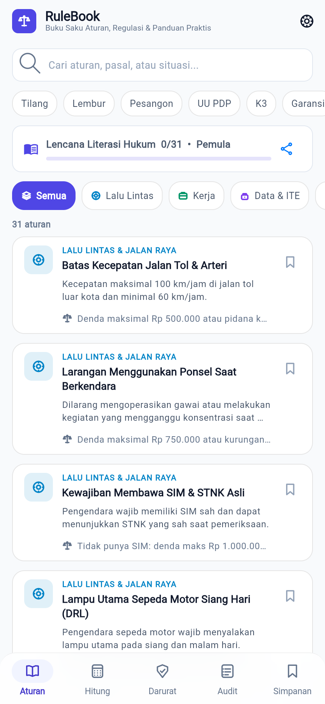
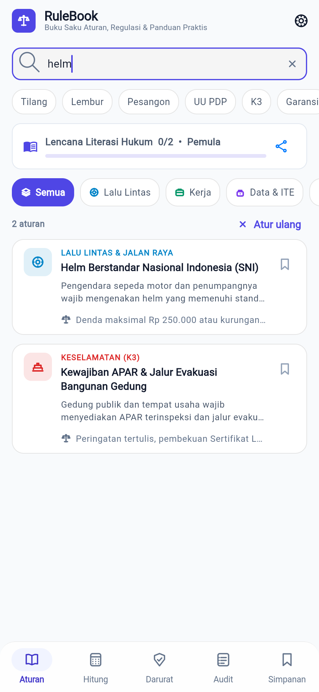
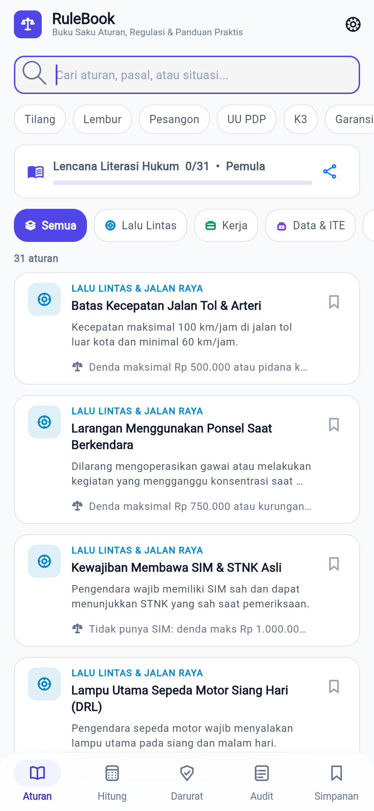
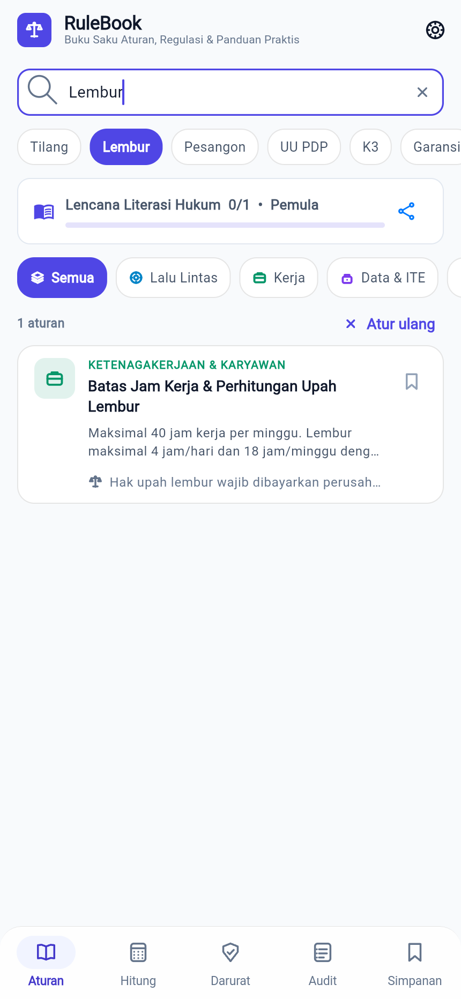

BAST rulebook · BAST-FLOW-RUL-02
Mencari aturan secara instan
FLOW-RUL-02ROL-001MOD-001EP-001US-003FR-004NFR-002
Pengguna mengetik kata kunci di kolom pencarian; hasil tersaring seketika dari judul, ringkasan, dasar hukum, dan kata kunci.
Langkah 1: Buka layar Aturan
Kolom Cari aturan, pasal, atau situasi... ada di bagian atas layar Aturan.

Langkah 2: Ketik kata kunci
Ketik helm. Daftar langsung tersaring menjadi 2 aturan yang relevan.

Langkah 3: Bersihkan pencarian
Ketuk ikon Bersihkan pencarian untuk kembali ke seluruh 31 aturan.

Langkah 4: Gunakan pencarian cepat
Ketuk chip Lembur di bawah kolom pencarian untuk mencari topik populer tanpa mengetik.

Hasil uji
| TC | Jenis | Lapis | Skenario | Hasil |
|---|---|---|---|---|
FLOW-RUL-02-T01 | positive | unit | kata kunci "helm" menemukan aturan helm SNI | pass |
FLOW-RUL-02-T02 | negative | unit | kueri lebih dari 60 karakter ditolak dan kueri lama dipertahankan | pass |
FLOW-RUL-02-T03 | edge | unit | kueri hanya spasi dianggap kosong dan menampilkan semua aturan | pass |
FLOW-RUL-02-T04 | corner | unit | kueri yang cocok di kategori lain menghasilkan 0 dan bisa diatur ulang | pass |
FLOW-RUL-02-T05 | positive | unit | nomor pasal mencocokkan dasar hukum, tanpa membedakan huruf besar | pass |
Direkam terhadap flutter build web (lokal) oleh FLOW-RUL-02-T01.